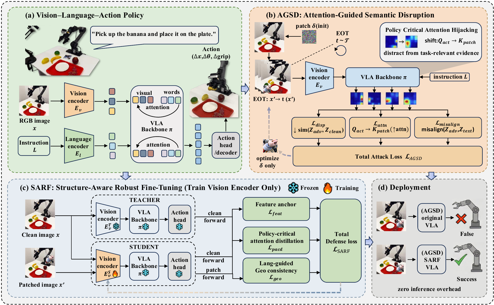

Robot Learning
Learning-based manipulation systems that connect perception, language, action, data collection, policy training, and real-robot deployment.
Robot Learning · VLA · WAM · Post-Training · Fine-Tuning
I am a master's student at Shenzhen University. My research focuses on robot learning, Vision-Language-Action (VLA) robots, World Action Models (WAM), post-training, and fine-tuning methods that make embodied policies more capable, robust, and deployable.
Research
Learning-based manipulation systems that connect perception, language, action, data collection, policy training, and real-robot deployment.
Generalist embodied policies that map visual observations and language instructions into robot actions, with an emphasis on safety and robustness.
Action-aware world modeling for embodied agents, including structure, dynamics, policy grounding, and interaction-aware prediction.
Methods that adapt pretrained robot policies after foundation training, improving task performance, robustness, and real-world alignment.
Parameter-efficient and structure-aware fine-tuning for embodied models, including visual encoders, policy-critical attention, and language-guided constraints.
News
Paper accepted to IROS 2026: "Structure-Aware Robust Fine-Tuning: Defending Vision-Language-Action Robots Against Physical Attention Hijacking."
Published the Aloha Pi0.5 LeRobot project, a real-robot learning pipeline for teleoperation, dataset tooling, training, and remote inference.
Continuing master's research at Shenzhen University in Shenzhen, China.
Projects
Defending Vision-Language-Action Robots Against Physical Attention Hijacking
This project studies physical-world robustness for VLA robot policies. It identifies a mechanism called policy-critical action-to-vision attention hijacking, where a printable adversarial patch diverts action-conditioned attention away from task-relevant regions and causes manipulation failures.

A real-robot learning pipeline for AlohaMini teleoperation, LeRobot-format datasets, A100 Pi0.5 training, and 4090-to-Orin remote closed-loop inference. The project adapts LeRobot into a practical Aloha manipulation stack for demonstration collection, dataset curation, model training, policy serving, and hardware-aware control.
Outputs
IROS 2026, accepted.
Introduces AGSD, a printable physical patch attack for VLA policies, and SARF, a visual-encoder-only robust fine-tuning defense that improves mechanism-level robustness without inference overhead.
Open-source engineering report and implementation covering teleoperation, data collection, dataset curation, Pi0.5 training, remote inference, and Orin-side closed-loop control.
Read the projectCV
Based in Shenzhen, China. Research focus: robot learning and robust VLA systems.
Structure-aware robust fine-tuning for defending VLA robots against physical attention hijacking.
Built and documented a real-robot learning stack for Aloha teleoperation, LeRobot datasets, Pi0.5 training, and remote inference.
Stack
Contact
I am happy to discuss robot learning, VLA/WAM research, robust fine-tuning, post-training, real-robot data pipelines, and research collaboration.